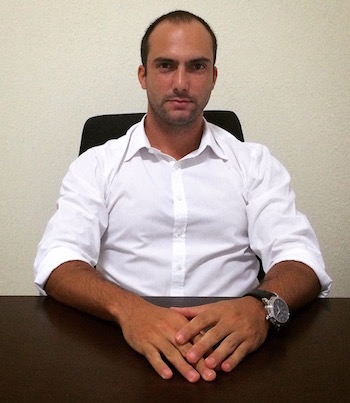

Atua na área Oriental há 10 anos, praticante de Yoga e Meditação há 5 anos, inclui em seus tratamentos a visão holística do ser, entendendo que a base da saúde é o autoconhecimento.
O nome acupuntura vem do latim acus que significa agulha e punctura - punção ou puntura. É uma das técnicas assim como a moxabustão, ventosaterapia, fitoterapia, Gua Sha, auriculoterapia que envolvem a Medicina Tradicional Chinesa. O tratamento com acupuntura consiste em um diagnóstico baseado em análises da Medicina Tradicional Chinesa. De acordo com os sinais que o paciente apresenta, são selecionados pontos no corpo chamados de acupontos e as agulhas são introduzidas. Podem ser utilizados os dedos, moeda, laser ou pedra de jade.
Indicações
São inúmeras as indicações da acupuntura. Alguns dos principais distúrbios tratados com a Medicina Tradicional Chinesa são: dores em geral, epicondilite lateral e medial, dor no pós-operatório de qualquer origem, fibromialgia, osteoartrite, distúrbios circulatórios, qualquer tipo de dor de cabeça, distúrbios do aparelho urinário e reprodutor, tratamento ginecológico, tensão pré-menstrual (TPM), Dismenorréia, Mioma uterino, ovário policístico, dor durante o parto, náuseas e vómito, sintomas do tratamento quimioterápico, problemas gástricos como, Excesso de salivação, náuseas, vômitos, diarréia, má-digestão, dor de estômago, azia, constipação, hemorróidas, dor de dente,neuralgia do trigêmeo, asma, bronquite,rinite alérgica, urticária, acne, eczema, dermatite de contato, coceira, psoríase,estresse, ansiedade, insônia, depressão, bulimia, compulsão por comida, paralisia facial periférica, vertigem, zumbido, síndrome do túnel do carpo, hipertensão arterial leve, dor de garganta, rinite, dor de ouvido, zumbido, tontura e vertigem, diminuição de audição, dor no olho, conjuntivite e aumento do sistema imunológico.
Benefícios
Melhora problemas gastrointestinais; problemas respiratórios; distensões, contraturas e cãimbras musculares; problemas urológicos; melhoraproblemas endocrinológicos; problemas psicológicos como ansiedade, stress, depressão, sindrome do pânico, angústia; melhoraproblemas neurológicos; disturbios ginecológicos como infertilidade, ovário policistico, mioma uterino, cólicas menstruais, sintomas da tpm e menopausa; melhora problemas dermatológicos dores em geral; insônia; cansaço físico em mental; alergias em geral.
Como é a consulta?
Primeiramente, é feito um diagnóstico de acordo com os conhecimentos da Medicina Tradicional Chinesa, através de uma avaliação, exame do pulso e da língua. Após, são selecionados os pontos de acordo com o diagnóstico. São utilizadas agulhas descartáveis, sendo retiradas após quinze, vinte ou trinta minutos. Depende-se muito do diagnóstico. Se necessário, também são colocadas agulhas na parte das costas. Durante o período em que as agulhas estão inseridas, o terapeuta pode também associar outras técnicas, como moxabustão, ventosaterapia, auriculoterapia. As sessões posteriores podem ser iguais ou ter os pontos modificados, de acordo com a evolução de cada caso em particular.
Como são as agulhas?
As agulhas de acupuntura são classificadas conforme a largura e o comprimento da lâmina. O calibre das agulhas é indicado em milímetros. O normal é dividir as agulhas em finas, médias e grossas dependendo do local onde serão inseridas. (1) Finas até 0,20 mm geralmente usadas na face e nas extremidades; (2) médias em torno de 0,25 mm para inserção nos punhos, mãos, pés e tornozelos (3) grossas de 0,30 mm ou mais para inserção profunda em músculos, da perna, coxa, abdome, costas etc.
O que são os pontos de acupuntura?
Os pontos de acupuntura são locais específicos do corpo com muitas terminações nervosas por onde circulam a energia. Essa energia pode estar insuficiente, em excesso ou estagnada provocando disfunções como dores e doenças. Ao estimular esses pontos com as agulhas a energia volta a circular livremente pelo corpo. Após uma avaliação, o acupunturista determinar o tipo de tratamento e os pontos utilizados e quantas sessões serão necessárias para que o problema de saúde seja resolvido.
A Acupuntura tem contra-indicações?
Por existir algumas contra indicações, a acupuntura deve ser feita por um profissional habilitado. Nos casos de emergências médicas o paciente deve ser direcionado imediatamente para um centro de emergência médica. Acupuntura não pode ser utilizada como forma de substituição de intervenção cirúrgica necessária (ex. para o tratamento de apendicite). Acupuntura não deve ser utilizada para o tratamento de tumores malignos. Em particular, a inserção de agulha no local do tumor deve ser proibida. No entanto, a acupuntura pode ser usado como uma medida complementar, em combinação com outros tratamentos, para o alívio da dor ou de outros sintomas, para aliviar os efeitos secundários da quimioterapia e radioterapia e, assim, para melhorar a qualidade de vida. A acupuntura deve ser feita com muita cautela em pacientes com distúrbios hemorrágicos e da coagulação, como diabéticos por exemplo.
Gravidez
A acupuntura pode ser aplicada durante a gravidez, mas os pontos de punção na parte inferior do abdômen e na região lombossacral são contra-indicados durante o primeiro trimestre. Depois do terceiro mês, os pontos na parte superior do abdômen e na região lombar também devem ser evitados. Existem também alguns pontos situados nas mãos, pés e pernas que devem ser evitados. Portanto, é extremamente recomendado que se procure um profissional habilitado.
Acupuntura é segura?
A acupuntura é extremamente segura se aplicada por um profissional devidamente habilitado.
Acupuntura
A acupuntura (do latim acus - agulha e punctura - punção) é uma das técnicas que compõe a Medicina Tradicional Chinesa.
O tratamento com acupuntura consiste basicamente em diagnóstico e aplicação de agulhas em pontos específicos do corpo, também chamados de acupontos, que ficam situados em canais energéticos chamados meridianos.
É fundamental compreender que a acupuntura não é exclusividade médica e pode ser aplicada por qualquer profissional com devida formação acadêmica.
O tratamento com acupuntura utiliza um raciocínio absolutamente estranho à medicina ocidental moderna. Tem como base os 5 elementos e a teoria Yin e Yang.
ALGUMAS INDICAÇÕES
Tratamento da dor pós-operatória;
Náusea e vômitos da quimioterapia;
Reabilitação de AVC;
Dores de cabeça;
Distúrbios menstruais;
Inflamações em geral;
Fibromialgia;
Osteoartrite;
Dores em geral;
Asma;
Alergia;
Tratamento para a fertilidade;
Doenças da pele;
Estresse;
Hipertensão;
Problemas gastrointestinais;
Distúrbios do sono.
CONTRA-INDICAÇÕES
Gravidez
A acupuntura na gravidez é extremamente benéfica por aliviar os sintomas como edemas, dores, enjôos etc, porém, deve ser realizada com grande precaução, pois pode induzir o trabalho. Apenas o ato de agulhamento com um certo modo de manipulação em determinados pontos de acupuntura pode provocar fortes contrações uterinas e induzir o aborto.
Tradicionalmente, os pontos de punção na parte inferior do abdômen e na região lombossacral são contra-indicados durante o primeiro trimestre.
Depois do terceiro mês, os pontos na parte superior do abdómen e na região lombo-sacra e os pontos que provocam sensações fortes devem ser evitados, em conjunto com os pontos de acupuntura auricular que pode também induzir o parto.
Emergências médicas
A acupuntura é contra-indicada como tratamento em casos de emergência. Nesses casos, os primeiros socorros devem ser aplicados e realizado o transporte para um centro de emergência médica.
Doenças que necessitem intervenção cirúrgica.
Acupuntura não pode ser utilizada como forma de substituição de intervenção cirúrgica necessária (ex.: realização de apendicectomia para o tratamento de apendicite).
Tumores malignos
Tambem não deve ser utilizada para o tratamento de tumores malignos. Em particular, a inserção de agulha no local do tumor deve ser proibida. No entanto, a acupuntura pode ser usado como uma medida complementar, em combinação com outros tratamentos, para o alívio da dor ou de outros sintomas, para aliviar os efeitos secundários da quimioterapia e radioterapia, e, assim, para melhorar a qualidade de vida.
Alterações da coagulação
O agulhamento deve ser feito com muita cautela em pacientes com distúrbios hemorrágicos e da coagulação, ou que estejam em tratamento com anticoagulantes ou tomar drogas com um efeito anticoagulante.
Ventosaterapia
A ventosa faz parte do conjunto de técnicas que compõem a MTC.
Segundo a MTC, a ventosaterapia tem a propriedade de limpar o sangue das toxinas acumuladas no organismo produzida pelos alimentos e outras fontes poluentes. O sangue estagnado, escuro e sujo, nos músculos das costas ou das articulações é considerado pelas MTC como um dos elementos causadores de doenças.
É usada para o alívio de dores musculares, melhorar o sistema circulatório e até mesmo, para redução de celulite e gordura localizada, lombalgias, dor abdominal, hipertensão arterial e muitas outras patologias.
Podem ser utilizadas em associação com outras terapias reforçando a efetividade destas.
Pode-se utilizar a ventosa para produzir o “efeito massagem”. Esta massagem tem o efeito de remover a pele ressacada pela abertura dos poros e pela transpiração. Tem o efeito de aumentar o fluxo da linfa, reduzindo o edema, mantém a flexibilidade dos músculos, retirar as adesões e as fibroses e mobilizar o funcionamento dos órgãos, descongestionar os bloqueios de energia, ativar a circulação e o funcionamento geral do corpo.
Esta é uma técnica contra indicada em casos de febre alta, convulsões ou cólicas, alergias na pele ou inflamações ulceradas, áreas onde o músculo é fino ou a pele não é plana por causa dos ângulos e depressões ósseas, no abdómen e região lombar em gestantes. Algumas outras considerações a ter no uso das ventosas é que estas devem ser deixadas no local somente até haver congestão local (geralmente 5 a 15 minutos).
A aplicação das ventosas deixa frequentemente uma marca púrpura na pele aonde esta foi sugada, isto é normal e vai desaparecer sem tratamento especial. Se a marca for muito profunda, as ventosas não devem ser colocadas de novo nesse local enquanto subsistir a marca.
Acupuntura
A acupuntura (do latim acus - agulha e punctura - punção) é uma das técnicas que compõe a Medicina Tradicional Chinesa.
O tratamento com acupuntura consiste basicamente em diagnóstico e aplicação de agulhas em pontos específicos do corpo, também chamados de acupontos, que ficam situados em canais energéticos chamados meridianos.
É fundamental compreender que a acupuntura não é exclusividade médica e pode ser aplicada por qualquer profissional com devida formação acadêmica.
O tratamento com acupuntura utiliza um raciocínio absolutamente estranho à medicina ocidental moderna. Tem como base os 5 elementos e a teoria Yin e Yang.
ALGUMAS INDICAÇÕES
Tratamento da dor pós-operatória;
Náusea e vômitos da quimioterapia;
Reabilitação de AVC;
Dores de cabeça;
Distúrbios menstruais;
Inflamações em geral;
Fibromialgia;
Osteoartrite;
Dores em geral;
Asma;
Alergia;
Tratamento para a fertilidade;
Doenças da pele;
Estresse;
Hipertensão;
Problemas gastrointestinais;
Distúrbios do sono.
CONTRA-INDICAÇÕES
Gravidez
A acupuntura na gravidez é extremamente benéfica por aliviar os sintomas como edemas, dores, enjôos etc, porém, deve ser realizada com grande precaução, pois pode induzir o trabalho. Apenas o ato de agulhamento com um certo modo de manipulação em determinados pontos de acupuntura pode provocar fortes contrações uterinas e induzir o aborto.
Tradicionalmente, os pontos de punção na parte inferior do abdômen e na região lombossacral são contra-indicados durante o primeiro trimestre.
Depois do terceiro mês, os pontos na parte superior do abdómen e na região lombo-sacra e os pontos que provocam sensações fortes devem ser evitados, em conjunto com os pontos de acupuntura auricular que pode também induzir o parto.
Emergências médicas
A acupuntura é contra-indicada como tratamento em casos de emergência. Nesses casos, os primeiros socorros devem ser aplicados e realizado o transporte para um centro de emergência médica.
Doenças que necessitem intervenção cirúrgica.
Acupuntura não pode ser utilizada como forma de substituição de intervenção cirúrgica necessária (ex.: realização de apendicectomia para o tratamento de apendicite).
Tumores malignos
Tambem não deve ser utilizada para o tratamento de tumores malignos. Em particular, a inserção de agulha no local do tumor deve ser proibida. No entanto, a acupuntura pode ser usado como uma medida complementar, em combinação com outros tratamentos, para o alívio da dor ou de outros sintomas, para aliviar os efeitos secundários da quimioterapia e radioterapia, e, assim, para melhorar a qualidade de vida.
Alterações da coagulação
O agulhamento deve ser feito com muita cautela em pacientes com distúrbios hemorrágicos e da coagulação, ou que estejam em tratamento com anticoagulantes ou tomar drogas com um efeito anticoagulante.
Moxabustão
Proveniente da Medicina Tradicional Chinesa, a moxabustão é uma técnica que assim como a acupuntura e a ventosaterapia, utiliza os meridianos para tratamento.
Segundo MTC, o frio, vento, calor, secura e umidade são grandes causadores de doenças.
O objetivo da moxabustão promover o equilíbrio, pois desobstrui os bloqueios de energia. Ao invés de agulhas, utiliza aplicações de calor nos acupontos.
Geralmente, é utilizado um bastão que tem como principal matéria prima uma erva chamada de Artemísia (Artemísia Vulgaris) ou carvão. O bastão produz uma excelente fonte de calor, promovendo o efeito terapêutico.
O bastão é aceso e o terapeuta deixa-o aproximadamente 1 cm de distância da pele do cliente. Esta distância varia muito de acordo com a capacidade de tolerância do cliente. A aplicação não gera nenhum tipo de dor ou queimadura.
ALGUMAS INDICAÇÕES
Dores musculares
Relaxamento físico e mental
Estresse
Ansiedade
Depressão
Constipação
Insônia
Diarreia
Dores nos joelhos
Asma
Problemas digestivos
Dores nas costas
Resfriado
Sinusite
Problemas menstrual
CONTRA INDICAÇÕES
Pessoas com febre
Pessoas alcoolizadas
Pessoas com queimaduras
Pessoas com feridas abertas ou traumas recentes
Mulheres grávidas
Auriculoterapia
A auriculoterapia faz parte de um conjunto de técnicas terapêuticas, que tem como base os preceitos da Medicina Tradicional Chinesa. É uma terapia que consiste na estimulação com agulhas, sementes de mostarda, objetos metálicos ou magnéticos em pontos específicos da orelha para diversos fins terapeuticos.
Além disso, a auriculoterapia ajuda a diagnosticar e a prevenir algumas doenças através da observação dos pontos específicos da orelha que se encontram alterados.
Nas últimas décadas, a técnica vem se difundindo por todo o mundo em função da crescente aceitabilidade pelas comunidades científicas, após estudos que vem sendo realizados sob uma perspectiva ocidental, com métodos de investigação modernos.
ALGUMAS INDICAÇÕES
A auriculoterapia é indicada no tratamento de:
Dores por torções, contraturas ou distensões musculares, por exemplo;
Problemas reumáticos, respiratórios, cardíacos, urinários, digestivos, hormonais, como obesidade, anorexia ou doenças da tireoide, por exemplo, e psicológicos, como ansiedade ou depressão.
Além disso, a auriculoterapia também pode ser utilizada para tratar a hipertensão, vertigens ou palpitações, por exemplo.
CONTRA-INDICAÇÕES
Sabemos que os efeitos colaterais existem e são comuns, mas podem ser evitados, por isso a auriculoterapia possui algumas contraindicações e devem ser respeitadas:
Gestantes, até o terceiro mês de gravidez devem evitar as sessões e, após esse período, alguns pontos auriculares não devem ser utilizados até o final da gestação, pois podem promover contrações uterinas, consequentemente aborto;
Pessoas com hipersensibilidade.
Pessoas com graus psiquiátricos não medicados.
Casos de lesões, inflamações do pavilhão auricular;
Em casos de esgotamentos excessivos, jejum prolongado, caquexia, anemia, os pacientes devem ser tratados deitados e evitar estímulos muito fortes
Fitoterapia
O termo fitoterapia tem origem grega, no qual fito "phyto" significa "vegetal" e terapia "tratamento". A fitoterapia é a utilização das plantas, para tratamento de doenças e recuperação da saúde.
Pode-se considerar medicamento fitoterápico toda preparação farmacêutica (extratos, pomadas e cápsulas) utilizando como matéria-prima partes de plantas (folhas, caules, raízes, flores e sementes) com reconhecido efeito farmacológico.
Diversas pesquisas científicas realizadas comprovam que a fitoterapia oferece soluções eficazes e mais baratas para o tratamento de doenças.
Estudos apontam que o uso de plantas, com fins medicinais, é anterior a 2000 a.C. O uso terapêutico de plantas é, provavelmente, tão antigo quanto a própria humanidade.
Os nativos da ilha de Fiji, a mais de três mil anos, utilizam a planta kava kava (Piper methysticum) como calmante. Cientistas alemães realizaram estudos sobre as propriedades da kava kava, e comprovou-se que seu extrato tem efeito no combate à ansiedade.
Contudo, é necessário cautela na utilização de plantas. Conceitos populares de que as plantas não fazem mal ou o que vem da natureza não faz mal, não é verdade. Plantas como, por exemplo, a "comigo ninguém pode" é extremamente tóxica e pode matar. Assim como, estricnina, morfina e cocaína que também são produtos naturais.
Qualquer medicamento, incluindo os fitoterápicos, só deve ser consumido seguindo orientação médica. Dificilmente chega-se a uma overdose de chá de erva-cidreira, mas ainda existem muitas plantas cujos efeitos não são bem conhecidos e seu uso indiscriminado pode prejudicar a saúde.
Tiago Mulato de Carvalho

Formado em Edução Física pela Pontifícia Universidade
Católica de Campinas -PUCC, Pós-graduado em Acupuntura
pela Associação Brasileira de Acupuntura - ABA e
Massoterapia pelo Senac Campinas, passou 1 mês em Beijing
na China se especializando na W.F.A.S. The World
Federation of Acupuncture - Moxibustion Societies e no
Beijing Hospital.
Sócio fundador da VidaJump – Centro de Revitalização
Energética - sendo responsável pela coordenação e
desenvolvimento de técnicas orientais e ocidentais
direcionadas ao público em geral e programas específicos à
atletas e terceira idade visando a qualidade de vida.
Foi professor da FAJ - Faculdade de Jaguariúna no curso
técnico em massoterapia, responsável pelas aulas de
técnicas de relaxamento, auriculoterapia, reflexologia
podal, massagem clássica e Do-in.
É terapeuta voluntário no tratamento bioenergético em
grupo de pessoas com patologias físicas e síndromes
psicossomáticas através da imposição de mãos e
reequilíbrio dos chakras. Desde 2013, ministra palestras
aos voluntários voltadas à saúde através do
autoconhecimento.
Atua na área Oriental à 10 anos, praticante de Yoga e
Meditação a 5 anos, inclui em seus tratamentos a visão
holística do ser, entendendo que a base da saúde é o
autoconhecimento.
Há 5 anos é Educador e Diretor voluntário responsável
pela área de Esportes da Fundação Eufraten com foco no
desenvolvimento de atividades esportivas educacionais que
proporcionem ao educando descobrir seu potencial, através
da Pedagogia Heulosófica – Ciência do Autoconhecimento.